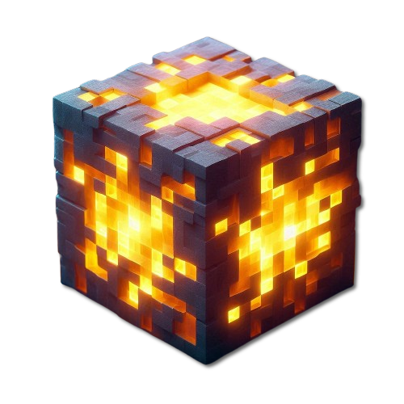

Косметична генерація
Змінені дерева та зовнішній вигляд біомів без відходу від ванільного стилю.

StoneLightVanilla Survival • Java + Bedrock
Український Minecraft сервер ванільного виживання: сезони, Hard-складність, кросплатформа та жива спільнота.
Java: stonelight.apexmc.co
З 19.07.2021
StoneLight — сервер для спокійного, але насиченого виживання: ванільна основа, косметичні покращення, сезонний прогрес і корисні дрібниці, які не ламають атмосферу Minecraft.
Особливості
Змінені дерева та зовнішній вигляд біомів без відходу від ванільного стилю.
Інформація про вулики, гра з собакою, кольори в ковадлі, молочні зілля.
Античит, реєстрація, геолокація та анти-VPN для захисту спільноти.
Редактор стійок для броні, невидимість і додаткові плюшки в Discord.
Підключення
Для отримання доступу до сервера, необхідно подати заявку в нашому Discord.
Тицни ЛКМ на кнопку, щоб скопіювати IP-адресу.
Сервер недоступний на території росії та білорусі.
Useful
Збірки модів, ресурспаки та допоміжні файли для комфортної гри на StoneLight.
Збірка модів на Fabric 26.1.2; без конфігів.
Альтернативна збірка модів на Fabric 1.21.10.
Серверний ресурспак від poslednei. Встановлюється вручну на клієнті.
Текстовий список назв предметів для кастомних моделей ресурспаку.
Ресурспак для Bedrock-гравців, який покращує сумісність з Java-сервером.
Лаунчер із серверною збіркою та можливістю створювати окремі власні.